Postfächer automatisch verteilen
Stichwortregeln je Postfach, danach Team, Person oder Round Robin.
Stadtwerke/Versorger
SocialHub CX verteilt E-Mails zu Abschlag, Zählerstand oder Umzug per Stichwortregel an das richtige Team und bündelt Social-Media-Anfragen, etwa bei Versorgungsstörungen, als Tickets. SocialHub ist ein deutscher Anbieter mit Hosting in Deutschland (Falkenstein, Nürnberg), ISO 27001 und Single Sign-on.
Hosting in Deutschland (Falkenstein, Nürnberg), ISO 27001 (SocialHub) und Single Sign-on – Unterlagen für Ihre Dienstleisterprüfung erhalten Sie auf Anfrage.

Stichwortregeln je Postfach, danach Team, Person oder Round Robin.
Kommentare und Nachrichten als Tickets, gebündelt in regelbasierten Ordnern.
Einheitliche Antworten mit Variablen; Entwürfe aus Ihren Service-Artikeln mit Quellen.
Ziel für die Erstantwort und Rückstand im Dashboard.
Single Sign-on (SSO); Rechte über die SocialHub-Plattform.
ISO 27001 (SocialHub), Hosting in Deutschland (Falkenstein, Nürnberg) bei einem Anbieter mit BSI-C5-Testat, AV-Vertrag auf Anfrage.
Hosting in Deutschland (Falkenstein, Nürnberg), ISO 27001 (SocialHub) und Single Sign-on – Unterlagen für Ihre Dienstleisterprüfung erhalten Sie auf Anfrage.
SocialHub auf OMR Reviews: 4,57 von 5 aus 374 Bewertungen, Stand 20.10.2026


FAQ
Ja, SocialHub CX ordnet E-Mails über Stichwortregeln je Postfach automatisch zu, etwa bei Begriffen wie „Abschlag“, „Zählerstand“ oder „Umzug“. Trifft keine Regel zu, gehen Tickets an ein Team, eine Person oder reihum an verfügbare Mitarbeitende. Mitarbeitende mit dem Status „Abwesend“ erhalten keine neuen Tickets.
SocialHub CX bündelt bei Versorgungsstörungen Kommentare, Nachrichten und E-Mails als Tickets in einem Workspace. Regelbasierte Ordner fassen die Anfragen zusammen, abgestimmte Vorlagen sorgen für einheitliche Antworten, und Sammelaktionen erledigen gleichartige Tickets auf einmal. Das Dashboard zeigt Eingang und Rückstand im Verlauf.
SocialHub CX unterstützt Ihre Lieferantenprüfung mit Angaben zu ISO 27001 (SocialHub), Hosting in Deutschland (Falkenstein, Nürnberg) bei einem Anbieter mit BSI-C5-Testat und Single Sign-on; einen AV-Vertrag erhalten Sie auf Anfrage. Die Pflichten aus NIS2 liegen bei Ihrem Unternehmen; eine eigene NIS2-Konformität von SocialHub CX behaupten wir nicht.
Nein, SocialHub CX enthält keine Anbindung an Abrechnungs- oder CRM-Systeme und keine offene API. SocialHub CX bearbeitet die schriftlichen Anfragen aus E-Mail und Social Media; Daten aus Ihrer Abrechnung schlägt Ihr Team wie gewohnt im Fachsystem nach und dokumentiert Ergebnisse in internen Notizen.
Q&A
SocialHub CX verteilt E-Mails zu Abschlag, Abrechnung oder Zählerstand per Stichwortregel je Postfach direkt an das zuständige Team, reihum an verfügbare Mitarbeitende. Ihr Team antwortet mit abgestimmten Vorlagen und Variablen wie Vorname und Ticketnummer; der Co-Pilot entwirft Antworten aus Ihren Tarif- und Abrechnungsartikeln. Das Dashboard zeigt Rückstand und Erstantworten.
SocialHub CX fängt Anfragewellen mit regelbasierten Ordnern, Stichwortregeln, Vorlagen und Sammelaktionen ab. Ein Ordner sammelt alle Tickets zum Thema Abschlag, eine abgestimmte Vorlage sorgt für einheitliche Antworten, und Sammelaktionen erledigen, priorisieren oder übernehmen mehrere Tickets auf einmal. Eingangszeiten nach Stunde und Wochentag helfen bei der Personalplanung.
SocialHub CX hilft, Beschwerdefristen im Blick zu behalten, indem jede Beschwerde ein Ticket mit Eingangszeit, Zuständigkeit und dokumentiertem Verlauf wird. Regelbasierte Ordner zeigen, was seit Längerem offen ist, und das Dashboard zeigt Lösungszeiten. Ein eigenes Lösungszeit-Ziel mit Eskalation gehört nicht zum Funktionsumfang; die Frist selbst ergibt sich aus dem Energierecht.
SocialHub CX macht jede Beschwerde, die per E-Mail beim Versorger eingeht, zu einem Ticket mit Ticketnummer. Auf Wunsch erhalten Kundinnen und Kunden eine automatische Eingangsbestätigung mit dieser Nummer. Stichwortregeln leiten Beschwerden an das zuständige Team, und das Aktivitätsprotokoll dokumentiert jede Bearbeitung. Welche Wege Sie rechtlich anbieten müssen, klärt Ihre Rechtsabteilung.
In der Demo zeigen wir Routing nach Stichwort, Vorlagen und das Dashboard an typischen Versorger-Anfragen.